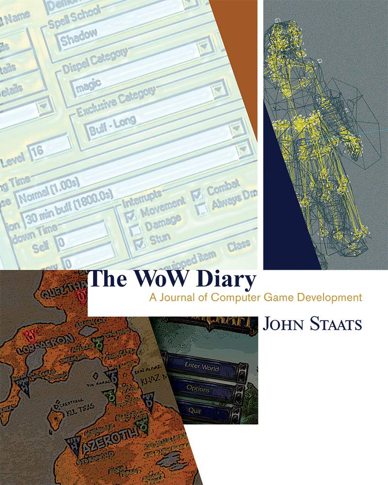
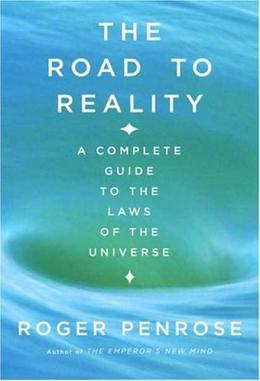
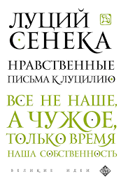
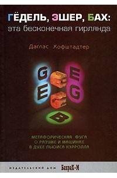

Алексей Моисеенков работал менеджером по продукту в Mail.ru Group, а в 2016 году вместе с партнерами запустил фоторедактор Prisma. По итогам того же года Apple назвала Prisma лучшим приложением, а в январе 2017-го американский Forbes включил Моисеенкова в рейтинг самых ярких предпринимателей моложе 30 лет. С тех пор он успел выйти из Prisma и создать мессенджер на основе машинного обучения Capture. Специально для Forbes предприниматель выбрал четыре книги, которые помогли ему в развитии собственных проектов, и прокомментировал свой выбор
Бывший менеджер по продукту в Mail.ru Group (сейчас VK) Алексей Моисеенков запустил компанию Prisma Labs в 2016 году вместе с партнерами — тогда студентом МФТИ Ильей Фроловым, бывшими коллегами по «Яндексу» Андреем Усольцевым и Арамом Харди и разработчиком Олегом Поягановым. Первым продуктом компании стал фоторедактор на основе нейронных сетей Prisma, выпущенный в июне 2016-го. Сервис позволял стилизовать фотографии в манере картин известных художников.
Уже через полторы недели после запуска приложение собрало 650 000 пользователей и попало в топ-10 магазина App Store сразу в 10 странах. К августу через Prisma прошло более 1,2 млрд фотографий. По итогам 2016 года компания Apple назвала Prisma лучшим приложением года, а в январе 2017-го американский журнал Forbes включил Моисеенкова в рейтинг 30 самых перспективных предпринимателей моложе 30 лет. Еще до запуска в приложение инвестировал фонд Николая Давыдова и Михаила Тавера (сейчас — Taver Capital), а сразу после того, как Prisma выстрелила, в сервис вложился и Mail.ru Group.
Впоследствие популярность приложения упала — за полгода оно опустилось на несколько сотен строчек в App Store, накопило убытки и долги. С 2017 года у Prisma Labs стали меняться акционеры. В итоге основным владельцем компании с долей более 40% стала инвестиционная компания Haxus. Осенью 2016 года ее основали совладелец хостинговой компании Servers.com Алексей Губарев и бывший вице-президент VK по новым продуктам Юрий Гурский.
Моисеенков и другой основатель Prisma Labs Арам Харди покинули компанию в 2018 году. Вместе с Олегом Илларионовым, бывшим разработчиком «ВКонтакте» и создателем аналога Prisma для обработки фотографий через нейросети Vinci, они занялись разработкой мессенджера на основе машинного обучения Capture. На его развитие в июне 2018-го партнеры привлекли $1 млн от компании VK, фондов General Catalyst, Elysium Venture Capital и др. Официальный запуск приложения состоялся в июле 2019-го.
В 2021 году предприниматели свернули Capture. О причинах закрытия проекта Моисеенков говорить отказывается. Сейчас он занимается новым проектом, детали которого тоже пока не раскрывает.
Выбирая книги, которые стоит прочитать, Моисеенков остановился на научной и философской литературе. Он рассказывает, что подходит к чтению, как к диете, для которой тщательно выбирает продукты. «Книги — пища для ума, а сомнительные продукты только вредят», — говорит Моисеенков. По его мнению, литература из списка пригодится предпринимателям и специалистам по продуктам. Они «часто замыкаются на том, что видят вокруг себя», а это мешает находить новые решения, считает предприниматель.
«Я начал играть в четырнадцать лет, с World of Warcraft (WoW, ролевая онлайн-игра, созданная американской компанией Blizzard Entertainment. — Forbes). И до сих пор моя жизнь и работа связаны с играми. В своей книге старший разработчик уровней игры WoW Джон Стаатс раскрывает процесс работы над игрой, знакомит с людьми из индустрии, технологиями. Обязательна к прочтению всем продактам, проджектам и игрокам».
«Фундаментальный труд Нобелевского лауреата по физике, британского физика-математика Роджера Пенроуза. Книга вышла в 2004 году. В ней ученый описывает принципы работы теоретической физики и высказывается относительно теории суперсимметрии, теории струн, выдвигает гипотезы о природе Большого взрыва и черных дыр. Простор для познания тут безграничный. Но книга — не для легкого чтения. Поэтому советую ее людям с серьезной математической подготовкой — высшим образованием в области математики. Для понимания уровня сложности стоит прочесть статью, объясняющую мем, который у себя в Twitter запостил Илон Маск. Если с ней не будет сложностей, то вы осилите и книгу Пенроуза».
«Труд состоит из 124 писем Сенеки, римского государственного деятеля, философа, учителя императора Нерона, которые тот написал после ухода из политики. Они носят моралистический характер и адресованы другу Сенеки — политику и поэту Луцилию Младшему. «Нравственные письма к Луцилию» подводит итог жизненного опыта Сенеки и помогают понять взаимосвязь истории и ее уроков».
«Книга американского физика и информатика Дугласа Хофштадтера 1979 года, удостоенная Пулитцеровской премии. Автор исследует параллели в работах и биографиях австрийского логика и математика Курта Геделя, нидерландского художника-графика Маурица Эшера и немецкого композитора Иоганна Себастьяна Баха. Теорема Геделя — один из самых значимых результатов XX века. Изложение автора доставляет удовольствие, а концепты, которые переложены в простую форму, доносят до читателя все изящество. Книга помогает погрузиться в содержание математики. Стоит прочитать каждому, кто хочет понимать глубину вещей — без этого почти невозможно создать стоящий продукт».